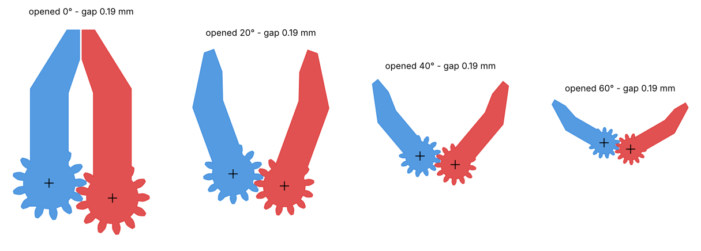
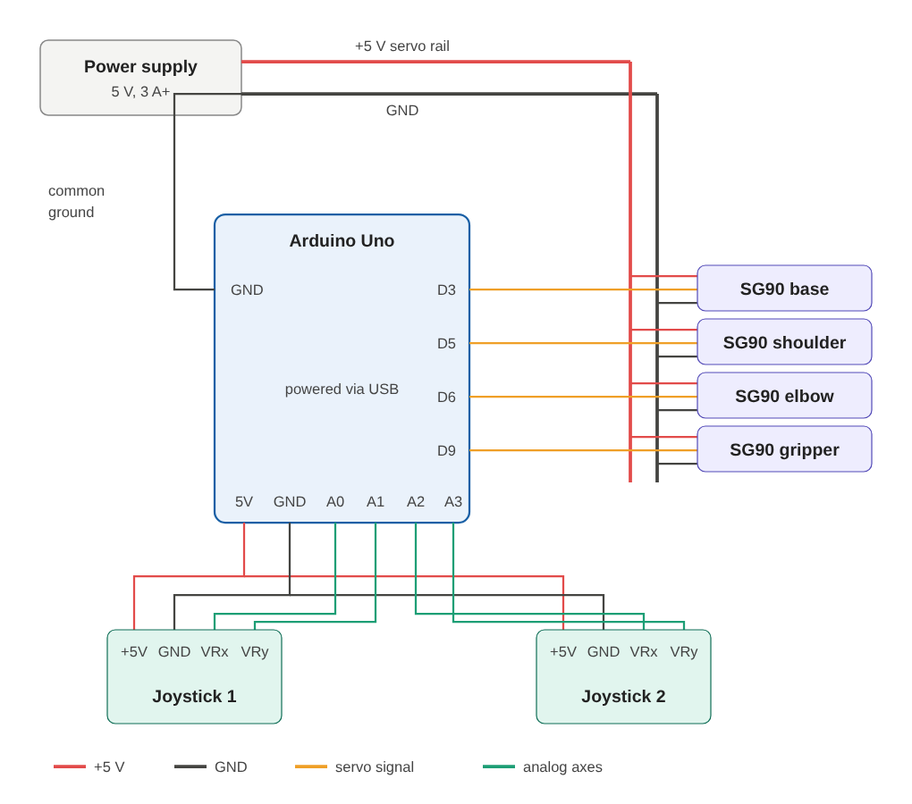

Overview
Four SG90 micro servos drive the joints. Two analog joysticks control the arm in real time. The whole structure is designed around one constraint: the small torque of the SG90.
The story
This arm went through three versions before it became my own design.
- v0 · Printed someone else's modelI started by printing a ready-made arm from MakerWorld, just to get something moving and see how a servo arm works.
- v1 · My own design, by eyeThen I wanted to build my own, using that arm as a reference. I measured everything with a ruler, modelled the parts by eye and printed them. It worked, but it showed me a long list of inaccuracies: parts that didn't fit the servos, gaps, and a gripper that lost sync.
- v2 · Rebuilt from scratch around real componentsI started again, this time from CAD models of the SG90 servo and horn, and designed every part around them. Then I built the full assembly in SolidWorks, checked the fits there, and only then printed. This is the version on this page.
- NextHide the wiring inside the structure, make the base support stiffer, and add a counterweight behind the shoulder (the torque calculation below shows why). In the firmware, add a teach-and-playback mode: record positions with the joysticks and replay them as a sequence, the way industrial robot arms are programmed.
Mechanical design
| Part | Mass | Function |
|---|---|---|
| RA00.00.01 | 19.0 g | Base plate, carries the yaw servo |
| RA00.00.02 | 9.7 g | Shoulder servo mount |
| RA00.00.03 | 9.7 g | Link 1, shoulder to elbow (100 mm) |
| RA00.00.04 | 9.1 g | Link 2, holds the elbow and gripper servos |
| RA00.00.05 / 06 | 3.8 g | Gear-coupled gripper fingers |
- Walls are multiples of the extrusion width (1.2 / 1.6 mm = 3 / 4 perimeters at 0.4 mm nozzle), so they print solid without gap infill.
- Servo horn pockets are offset +0.15 mm for FDM XY tolerance. The fit was checked on a small test print before printing full parts.
- Short, light links, because the shoulder torque budget limits everything beyond it.
Gear-driven gripper
Two identical spur gears couple the fingers, so both move symmetrically from one servo. One finger sits on the servo horn, the other turns on an M2 axis in the same link.
| Parameter | Value |
|---|---|
| Teeth z / module m | 13 / 1.17 mm |
| Pressure angle | 20°, involute |
| Centre distance a = m·z | 15.41 mm |
| FDM clearance | +0.2 mm, 0.06 mm backlash |
The module was derived from the centre distance fixed by the existing part, not chosen first. Mesh and collisions were checked from 0° to 60° opening in 5° steps: the tooth gap stays at ~0.19 mm with no interference.

Iteration: v1 → v2
v2 fix: both axes fixed in one rigid part, full 360° gears, and an integrated spacer boss as a bearing surface.
Shoulder torque
The shoulder carries everything beyond it, so it is the most loaded joint. Worst case is the arm fully extended horizontally. Masses are weighed printed parts; lever arms are the distances from the shoulder axis to each centre of mass, taken from the SolidWorks assembly.
| Element | m, g | r, cm | M, g·cm |
|---|---|---|---|
| Link 1 | 9.73 | 5.0 | 49 |
| Elbow servo | 9 | 10.5 | 95 |
| Link 2 | 9.10 | 14.7 | 134 |
| Gripper servo | 9 | 17.6 | 158 |
| Gripper fingers | 3.79 | 19.7 | 75 |
| Arm only | ≈ 510 | ||
| + payload 20 g | 20 | 21.9 | 438 |
| With payload | ≈ 948 |
SG90 stall torque is 1.8 kg·cm. Stall means the motor is already stopped and overheating, so the working limit was set to 50 % (900 g·cm). Most SG90s on the market are clones with lower real torque, which makes this margin necessary.
Result: the arm alone uses 510 g·cm, 28 % of stall. A 20 g payload at full reach brings it to 948 g·cm, slightly over the 900 g·cm working limit. The servo can hold it, but it runs hot. At the limit, the maximum payload at full reach is:
Where the torque comes from: the gripper end (gripper servo, fingers, payload) gives 71 % of the total, so a gram saved there is worth four grams on link 1. The elbow carries 390 g·cm with the same payload, well inside the limit.
Fix: counterweight
A 50 g counterweight 4 cm behind the shoulder axis adds −200 g·cm and brings the loaded case to 748 g·cm, back under the limit with margin. Since the counterweight sits on link 1, its torque falls with cos(θ) just like the arm's, so it balances at every angle. A heavy weight close to the axis is better than a light one far away: same torque (m·d), less inertia (m·d²).
Electronics

- Separate 5 V supply for the servos: four SG90s under load draw 2+ A, far more than the Arduino regulator or USB can give.
- Common ground between supply and Arduino, so the servo signal has a reference.
Firmware
- Velocity control: stick deflection sets how fast a joint moves, so the arm holds its pose when the stick is released.
- Joystick centres calibrated at start-up from 16 samples, so cheap joysticks with an offset centre don't drift.
- Dead zone and per-joint soft limits keep the servos away from mechanical stops, where an SG90 stalls and overheats.
- Servos attached one by one to avoid a current spike at power-on.